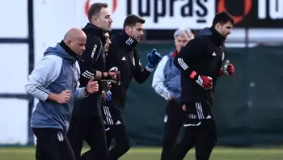

TRANSFER HABERLERİ | Aboubakar olmadı, hedef Batshuayi! Sürpriz talip ortaya çıktı
Transferde hareketli günler geçiren Beşiktaş için her gün yeni bir iddia gündeme gelmeye başladı. Ukrayna basınında çıkan son haberlere göre Beşiktaş, kadrosunu güçlendirmek için Ukraynalı orta saha oyuncusu Oleksandr Pikhalyonok’u istiyor. 26 yaşındaki futbolcu, Dnipro formasıyla gösterdiği performansla dikkat çekiyor. Ancak transferdeki en önemli detay kulübüyle 1.5 yıl daha anlaşması bulunan oyuncunun 6 milyon Euro’luk bonservis bedeli...
KARTAL İSTEDİ, ISMAEL ALIYOR Siyah-Beyazlılar, sezon başında da transfer gündeminde yer alan David Okereke’yi listesinde tutmaya devam ederken Kartal’ın eski hocasından bir atak geldi. Watford’u çalıştıran Beşiktaş’ın eski hocası Valerien Ismael de Okereke’ye ilgi duyuyor. Ada basınına göre İngiliz ekibi, 26 yaşındaki oyuncuyu kadrosuna katmaya yakın. David Okereke, bu sezon Cremonese’de 36 maçta forma giydi. Bu karşılaşmalarda 4 gol ve 4 asitlik performans sergiledi. Nijeryalı futbolcunun güncel piyasa değeri 2.7 milyon Euro olarak gösteriliyor.
- SAĞ BEKE YENİ ADAY: SONNE
- SALİH'TE BELİRSİZLİK VAR
- STOPERE GENÇ İSİM: EMİRHAN
- GATTONİ RADARA GİRDİ
- ANGELİNO'YA RET CEVABI
- ABOUBAKAR OLMADI HEDEF BATSHUAYİ!
Brezilya basınından Bolavip'te yer alan habere göre takımdan ayrılan Luis Suarez'in yerini doldurmak isteyen Gremio rotasını Fenerbahçe'de forma giyen Michy Batshuayi'ye çevirdi. Gremio şu anda şartları değerlendiriyor ve Batshuayi ile bir anlaşma sağlayabilir ise Fenerbahçe'ye resmi teklifini sunacak. Brezilya ekibi Belçikalı golcünün durumunu öğrenmek için temasa geçti. Bir süredir golcü arayışını sürdüren Gremio'nun listesinde Batshuayi'den önce Edinson Cavani ve Funes Mori'nin yanı sıra Vincent Aboubakar'ın da bulunduğu belirtilirken bu transferlerin gerçekleşmediği aktarıldı.